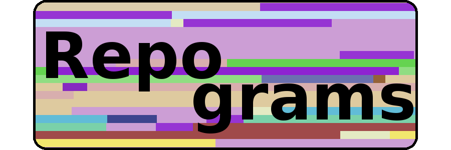

Settings
Switch…
Metric (block color):
{{currentMetric.value.label}}
Switch…
Block length:
{{currentBlen.value.label}}
Zoom:
{{translateZoom(currentZoom.num)}}
Repositories
Earliest commits
Latest commits
{{repo.name}}
Scroll all Repos
{{error.emessage}}